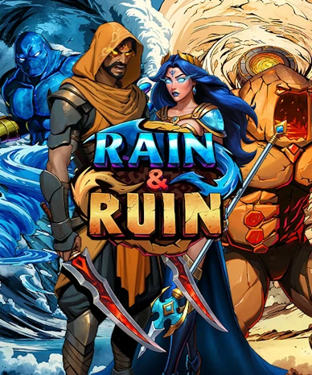
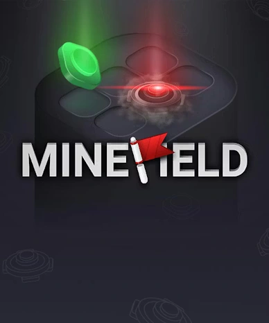

Welkom bij Funbet Casino! Onze Funbet-ervaring combineert spannende spellen, een overzichtelijke interface en soepele betalingen. Funbet casino biedt een uitgebreid aanbod van gokkasten en tafelspellen, en funbet kasino nodigt je uit voor veilig en verantwoord entertainment. Sluit je bij ons aan, pak je voordeel en speel op jouw manier – wij zijn er voor jou. Speel mobiel, ontdek toernooien en profiteer eenvoudig van onze aanbiedingen. Onze klantenservice staat altijd klaar en wij houden het spel eerlijk. funbet wacht op je
Populaire Spellen
Bekijk alles





Welkom bij Funbet Nederland!
Welkom bij Funbet Casino – dé online speelbestemming voor Nederlandse spelers die op zoek zijn naar spannende spellen en eersteklas entertainment! Wij hebben ons platform gebouwd met een overzichtelijke interface, een uitgebreid spelaanbod en soepele betaalmethoden, zodat alles samenkomt in één naadloze ervaring. Bij ons vindt u duizenden gokkasten, opwindende tafelspellen, een authentiek live casino en enorme jackpotmogelijkheden – allemaal binnen handbereik.
Voor onze nieuwe spelers hebben wij een royale welkomstbonus klaarstaan: 100% tot €500 plus 200 gratis spins. Daarnaast belonen wij onze actieve spelers met wekelijkse reload-bonussen van 55 gratis spins, een weekendreload tot €750 plus 75 gratis spins en een live cashback van 25% tot €200.
Veiligheid staat bij Fun Bet voorop – wij gebruiken moderne beveiligingstechnologieën en volgen de principes van verantwoord spelen. Onze Nederlandstalige klantenservice is 24/7 bereikbaar via live chat en e-mail. Spelen gaat vlot op zowel desktop als mobiele apparaten. Sluit u bij ons aan en ontdek waarom steeds meer Nederlandse spelers kiezen voor Funbet Casino!
Over Funbet Casino
|
Kenmerk |
Details |
|
Officiële website |
funbet.com.nl |
|
Opgericht |
2024 |
|
Licentie |
Niet duidelijk zichtbaar in openbare secties; in beoordelingen wordt o.a. PAGCOR genoemd |
|
Eigenaar |
Niet verifieerbaar via openbare pagina's (controleer de algemene voorwaarden / klantenservice) |
|
Welkomstbonus |
100% tot €500 + 200 gratis spins (min. €20) |
|
Minimale storting |
€10 (bijv. Mastercard / Open Banking / MiFinity) |
|
Aantal spellen |
Duizenden (bijv. in de "Nieuw"-lijst 2.795) |
|
Betaalmethoden |
Mastercard, Open Banking, MiFinity, Bitcoin, USDT (TRC20) |
Funbet Casino Bonussen

Bij ons Fun Bet Casino bieden wij een uitgebreid en voortdurend bijgewerkt bonusaanbod, ontworpen voor zowel nieuwe als ervaren spelers. Onze bonussen omvatten stortingsbonussen, gratis spins, live casino-voordelen en cashback-aanbiedingen, waardoor het spelen op lange termijn interessant blijft. Onze welkomstbonus voor nieuwe spelers is vaak het eerste contact met ons casino en geeft direct extra speeltegoed. Daarnaast bieden wij themagebonden acties aan, die bijvoorbeeld betrekking hebben op onze gokkasten, roulette of ons live casino.
Onze bonussen zijn zo opgebouwd dat ze bij verschillende speelstijlen passen. Gokkastspelers profiteren vaak van onze gratis spins en acties waarbij wij grote aantallen spins uitdelen voor bepaalde spellen. Voor liefhebbers van tafel- en live casinospellen bieden wij aparte acties, zoals live cashback of toernooigebaseerde bonussen. Onze cashback-bonussen zijn bijzonder populair, omdat ze een deel van de verliezen terugstorten en extra zekerheid bieden bij het spelen.
Al onze bonussen hebben eigen voorwaarden, die betrekking hebben op bijvoorbeeld inzetvereisten, geldigheidsduur en toegestane spellen. Daarom raden wij aan om de regels van onze bonussen altijd zorgvuldig te lezen vóór activering. Mits goed benut, kunnen onze bonussen de spelervaring aanzienlijk verbeteren en meer speeltijd en winstkansen bieden zonder extra risico.
- Welkomstbonus – 100% stortingsbonus op de eerste storting plus gratis spins. Maximaal voordeel: tot €500 + 200 gratis spins. Doelgroep: Nieuwe spelers.
- Weekly Reload – Wekelijkse herlaadactie met gratis spins. Maximaal voordeel: 55 gratis spins. Doelgroep: Actieve spelers.
- Weekend Reload Bonus – Weekendbonus met extra stortingsbonus en gratis spins. Maximaal voordeel: tot €750 + 75 gratis spins. Doelgroep: Weekendspelers.
- Live Cashback – Cashback op het live casino. Maximaal voordeel: 25% tot €200. Doelgroep: Live casino-spelers.
Funbet Spelaanbod
Wij bouwen ons spelaanbod op rondom onze uitgebreide spelhal, met naast gokkasten ook tafelspellen, een live casino en jackpotsecties. Ons spelaanbod valt in de categorie "duizenden spellen", en in onze spellijsten zijn al in afzonderlijke categorieën grote aantallen zichtbaar.
Onze spelcategorieën
- Gokkasten: basisslots, Megaways-achtige spellen, Bonus Buys-spellen en themaslots.
- Tafelspellen: roulette, blackjack, baccarat en variaties (beschikbaarheid kan variëren).
- Ons live casino: live roulette, live blackjack en gameshows (bijv. "Game Shows").
- Jackpots: onze aparte jackpotsectie en "Drops & Wins"-achtige acties.
- Overig: instant games en soms ook "crash"-achtige spellen (ons aanbod is afhankelijk van regio en aanbieders).

Spelstudio's en spelaanbieders – Casino Funbet
Bij Funbet werken wij samen met een breed scala aan bekende en gerenommeerde spelstudio's, wat ons een gevarieerd en kwalitatief hoogstaand spelaanbod garandeert. Wij werken met zowel internationaal bekende grote studio's als innovatieve ontwikkelaars die zich richten op moderne spelmechanieken en visueel indrukwekkende oplossingen. Deze combinatie zorgt ervoor dat wij zowel traditionele casinospellen als nieuwe, hoog-volatiliteitsslots met rijke bonusfuncties aanbieden.
Ons brede aanbod van spelaanbieders betekent in de praktijk dat onze spelers spellen kunnen kiezen naar eigen voorkeur. Sommige studio's staan vooral bekend om klassieke gokkasten, terwijl andere gespecialiseerd zijn in live casino of snelle, feature-rijke slots. Via onze providerlijst zijn spellen eenvoudig te filteren op bijvoorbeeld spelstudio, speltype of populairste titels, wat de spelervaring overzichtelijk en gebruiksvriendelijk maakt.
- Playtech – Slots, tafelspellen, live casino. Geschat aantal spellen: 600+. Vooral bekend om: Breed klassiek aanbod.
- Pragmatic Play – Slots, live casino. Geschat aantal spellen: 580+. Vooral bekend om: Bonusfuncties en Megaways.
- Spinomenal – Slots. Geschat aantal spellen: 690+. Vooral bekend om: Gevarieerde thema's.
- Play'n GO – Slots, tafelspellen. Geschat aantal spellen: 430+. Vooral bekend om: Hoge kwaliteit en mobiele optimalisatie.
- Evolution – Live casino. Geschat aantal spellen: 200+. Vooral bekend om: Live dealers en gameshows.
- Hacksaw Gaming – Slots. Geschat aantal spellen: 240+. Vooral bekend om: Hoge volatiliteit.
- Yggdrasil – Slots. Geschat aantal spellen: 440+. Vooral bekend om: Innovatieve mechanieken.
- NetEnt – Slots, tafelspellen. Geschat aantal spellen: 140+. Vooral bekend om: Klassieke spellen.

Funbet Betaalmethoden

Wij bieden onze spelers veelzijdige en veilige betaalopties voor zowel stortingen als opnames. Onze betaalmethoden omvatten Mastercard, Open Banking, MiFinity en cryptovaluta zoals Bitcoin, Ethereum en USDT (TRC20). De minimale storting begint vanaf €10, afhankelijk van de betaalmethode.
Wij verwerken opnameverzoeken binnen drie werkdagen, mits uw account onze verificatie heeft doorlopen. E-wallets en cryptovaluta bieden de snelste uitbetalingen, terwijl bankoverschrijvingen enkele werkdagen extra kunnen duren. Al onze betalingstransacties zijn beveiligd met SSL-encryptie om uw veiligheid te waarborgen.
Betaaltabel (storting en opname)
|
Betaalmethode |
Storting min–max (EUR) |
Verwerkingstijd storting |
Verwerkingstijd opname |
Mogelijke kosten |
Opmerkingen |
|
Mastercard |
€10 – €2.000 |
Meestal direct (afhankelijk van betaalmethode) |
Verwerkt binnen 3 werkdagen; bij bankoverschrijving +3–5 werkdagen |
Vaak €0 van ons casino; betaalservice kan kosten in rekening brengen |
Niet alle stortingsmethoden zijn altijd beschikbaar voor opnames |
|
Open Banking |
€10 – €10.000 |
Meestal snel (afhankelijk van de bank) |
Verwerkt binnen 3 werkdagen; de bank kan extra dagen nodig hebben |
Mogelijke bankkosten |
Goede optie als u een directe bankverbinding wenst |
|
MiFinity |
€10 – €2.500 |
Meestal direct |
Verwerkt binnen 3 werkdagen (verificaties kunnen van invloed zijn) |
Mogelijke kosten van de walletservice |
Zorg ervoor dat de accountnaam overeenkomt (opnames op eigen naam) |
|
Bitcoin |
€30 – €5.000 |
Afhankelijk van netwerkbevestigingen |
Verwerkt binnen 3 werkdagen; uiteindelijke tijd afhankelijk van het netwerk |
Netwerkkosten (network fee) |
Bij crypto varieert de bevestigingssnelheid |
|
Ethereum |
€10 – €5.000 |
Afhankelijk van netwerkbevestigingen |
Verwerkt binnen 3 werkdagen; netwerk is van invloed |
Netwerkkosten |
Let op het adres en netwerk (een fout kan terugbetaling verhinderen) |
|
USDT (TRC20) |
€10 – €5.000 |
Meestal snel (TRC20-netwerk) |
Verwerkt binnen 3 werkdagen; netwerk is van invloed |
Netwerkkosten |
Zorg ervoor dat u het juiste netwerk gebruikt (TRC20) |
Opnames: wat kunt u in de praktijk verwachten?
Volgens onze richtlijnen wordt een opnameverzoek binnen drie werkdagen (ma–vr) verwerkt, mits uw account onze vereiste verificaties en veiligheidscontroles heeft doorlopen. Zodra de opname de status "paid out" heeft, hangt de aankomsttijd af van de opnamemethode; een bankoverschrijving kan bijvoorbeeld nog 3–5 werkdagen extra duren.
Daarnaast is het goed om te weten dat niet al onze stortingsopties noodzakelijkerwijs beschikbaar zijn voor opnames. In dat geval raden wij aan een andere opnamemethode te kiezen; als er geen alternatief is, is een bankoverschrijving de gebruikelijke "noodroute".
Mobiele versie van Funbet Casino

Bij mobiel spelen staat gebruiksgemak centraal: onze responsieve website werkt in de browser en maakt het mogelijk om overal te storten, spellen te starten en onze opname-instructies te bekijken. In onze navigatie bieden wij aparte secties (Casino, Live Casino, Jackpots, Sports), die over het algemeen ook op de telefoon beschikbaar zijn.
De belangrijkste voordelen van mobiel spelen zijn:
- Gemak: speel zonder downloads, rechtstreeks in de browser.
- Snelheid: inloggen en spellen openen gaat snel.
- Beschikbaarheid: u kunt onze acties benutten en kassabewegingen controleren, ook onderweg.
Als u een "app-achtige" ervaring wilt zonder een aparte app, werkt bij veel casino's een snelkoppeling (shortcut) naar het startscherm. In het Fun Bet-menu is een aparte "Create Shortcut"-functie zichtbaar, die precies naar deze gebruikswijze verwijst.
Klantenservice van Funbet
Onze klantenservice is een van de belangrijkste vertrouwensfactoren: vooral onze bonusvoorwaarden, opnames en verificaties roepen de meeste vragen op. Op onze Help Centre-pagina staat ons ondersteuningsteam 24/7 klaar om te helpen, en als contactkanalen bieden wij live chat en e-mail (support@funbet.com).
Onze kanalen, openingstijden en reactietijden
- Live chat: 24/7
- E-mail: support@funbet.com.nl
Onze gemiddelde reactietijd is afhankelijk van de drukte en het onderwerp: in onze chat krijgt u vaak binnen enkele minuten antwoord, terwijl de verwerking per e-mail langer kan duren (vooral als er verificatiedocumenten bij betrokken zijn). Wij ondersteunen meerdere talen; op onze website is er een aparte Nederlandstalige interface-optie, wat de basiscommunicatie vergemakkelijkt.
Casino Funbet VIP-programma

Het idee achter ons VIP-programma is eenvoudig: hoe actiever u speelt, hoe meer voordelen u ontvangt. Via ons loyaliteitsprogramma bieden wij persoonlijke aanbiedingen, snellere verwerking, hogere limieten en cashback. Op ons casino is er een aparte "VIP Levels"-sectie, gebaseerd op een meerlagig systeem.
Aan onze VIP-niveaus wordt u doorgaans automatisch toegevoegd op basis van punten of inzet. Onze spelers verzamelen "voortgang" door met echt geld te spelen, en de niveaus stijgen wanneer bepaalde drempels worden overschreden. In sommige gevallen kan het VIP-lidmaatschap ook op uitnodiging zijn.
De voordelen van ons VIP-programma omvatten onder meer cashback, oftewel teruggave van verliezen tegen een bepaald percentage, onze speciale acties zoals reload-bonussen, gratis spins en toernooitickets, verhoogde opname- en stortingslimieten en snellere verwerking, met name voor geverifieerde accounts. Op onze hoogste niveaus bieden wij ook een persoonlijke accountmanager.
Een deel van onze cashback-voordelen kan gekoppeld zijn aan bepaalde VIP-niveaus, en de voorwaarden kunnen variëren per speltype. Wij raden aan om passende limieten te kiezen en het spelen beheersbaar te houden. Ons VIP-programma "compenseert" nooit verliezen, maar verbetert de algehele ervaring aanzienlijk voor onze actieve spelers.
Veiligheid en eerlijk spel bij Funbet Casino
Onze veiligheid en ons eerlijk spel zijn opgebouwd uit drie pijlers: (1) onze technische beveiliging, (2) onze licentie en speltoezicht, en (3) klantidentificatie (KYC) en fraudepreventie. Vanuit het perspectief van onze spelers is het belangrijkste om te begrijpen welke documenten wij kunnen opvragen en wanneer.
Accountverificatie (KYC) en onze veiligheidscontroles
In onze bonus- en betalingsvoorwaarden staat vermeld dat wij voldoende documenten kunnen opvragen ter verificatie van klantgegevens, zoals een identiteitsbewijs, adresbewijs en betaalmiddelbewijs, voordat een bonus wordt bijgeschreven of opnames worden verwerkt. Daarnaast wordt volgens onze opname-instructies een opnameverzoek pas verwerkt wanneer onze eventuele verificaties en veiligheidscontroles zijn doorlopen.
Onze praktische tip: als u een opname plant, rond de verificatie zo vroeg mogelijk af. Zo voorkomt u een situatie waarin de opname uitsluitend wordt vertraagd door ontbrekende documenten.
Onze technische beveiliging en gegevensbescherming
Technisch gezien gebruiken wij een versleutelde HTTPS/SSL-verbinding, zodat het inloggen en betalingsverkeer beveiligd verlopen. In onze privacyverklaring beschrijven wij welke persoonsgegevens wij verzamelen en waarvoor wij deze gebruiken (registratie, spelen, betalingen, beveiliging en wettelijke verplichtingen).
Leeftijdsgrens en verantwoord spelen
Onderaan onze website herinneren wij eraan dat gokken verslavend kan zijn en dat onze diensten uitsluitend bedoeld zijn voor personen van 18 jaar en ouder. Eerlijk spel is ook een kwestie van eigen gedrag: stel een budget in, neem pauzes en maak gebruik van onze beperkingstools als het spelen oncontroleerbaar begint aan te voelen.
Snelle & Veilige Betalingen


Wat onze spelers zeggen
"De snelste uitbetalingen die ik ooit heb meegemaakt. Funbet is echt razendsnel met verwerken!"
"Geweldige selectie aan slots. Het design is top en op mijn telefoon werkt alles super soepel."
"De support hielp me binnen 5 minuten met een vraag over mijn storting. Topservice!"
Veelgestelde Vragen
Is mobiel spelen bij Funbet net zo soepel als op de computer?
Wat betekent de bonusinzetvereiste bij Casino Funbet in de praktijk?
Kan ik mijn winsten opnemen als Funbet Casino om documenten vraagt?
Waarom toont Fun Bet niet dezelfde opnamemethode als bij de storting?
Welke spellen in de Funbet-spelhal zijn het beste om eerst uit te proberen?
Laatst bijgewerkt 16.03.2026